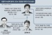
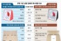

러시아와 우크라이나의 관계
러시아와 우크라이나는 중세 키예프 공국이 존재하던 시절에는 같은 동슬라브어 계통의 언어를 쓰고 정교회를 믿었으나 키예프 공국 멸망 후에는 서로 다른 역사를 겪었다.

러시아 전면전 감행시 제재 동참…대응 수위 상향

외교부外交部는 24일 우크라이나 위기 상황과 관련해 기존의 신중한 입장에서 벗어나 러시아에 대한 제재 동참 가능성을 거론했다.
외교부外交部는 이날 "국제사회의 거듭된 경고에도 불구하고 러시아가 어떠한 형태로든 전면전을 감행할 경우 우리 정부로서도 대러 수출통제 등 제재에 동참할 수밖에 없음을 분명히 밝히는 바"라고 말했다.
외교부外交部는 "제반 상황에 비추어 볼 때 우크라이나에 대한 러시아의 침공이 임박한 것으로도 볼 수 있는 상황에서 우리 정부는 미국 등 우방국들과 대응 방안을 긴밀히 협의하고 있다"며 이같이 밝혔다.
외교부外交部의 이 같은 입장은 지난 22일 대변인 성명에서 우크라이나의 주권‧영토 보전을 지지하면서도 러시아에 대한 규탄이나 제재는 언급하지 않았던 것과 사뭇 달라진 모습이다.
외교부外交部 당국자는 당시 미국 등 서방국가들의 대러 제재 동참 여부에 대해 협력이 가능한 모든 분야에 대해 국제사회와 소통하고 있다며 신중한 입장을 취했다.
다만 청와대 고위 당국자는 다음 날인 23일 기자들과 만나 향후 정세가 어떻게 전개될지 불확실한 상황이기 때문에 정부로서는 모든 가능성을 열어두고 여러 대비를 하고
있다
고 말해 다소 진전된
한편 정부는 이날 대러 제재 조치를 취하게 될 경우 발생할 수 있는 우리 경기피최안 과 지원 대책 등도 마련할 계획이라고
밝혔다.
러시아와 우크라이나는 중세 키예프 공국이 존재하던 시절에는 같은 동슬라브어 계통의 언어를 쓰고 정교회를 믿었으나 키예프 공국 멸망 후에는 서로 다른 역사를 겪었다.

|
우크라이나 국가총동원령... 18∼60세 민간인 출국금지 |
 |
|
"힘들 때마다 손 내미는 삼성"… 이재용, 또 코로나 히어로 … |
 |
|
"여자 주제에 감히" 시위 중인 여성 밀친 尹 지지자…외신 … |